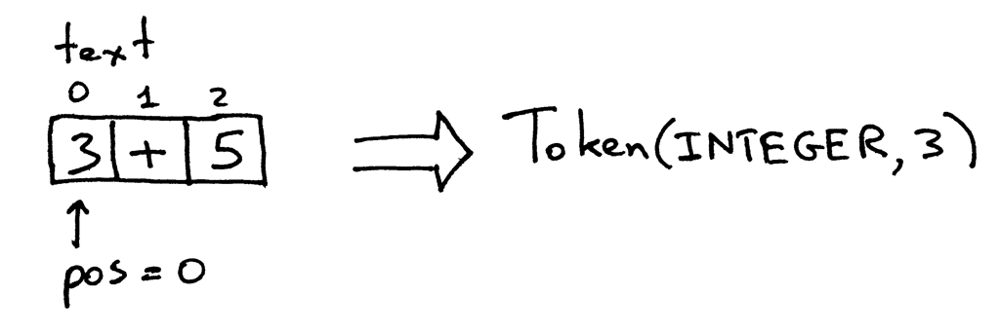
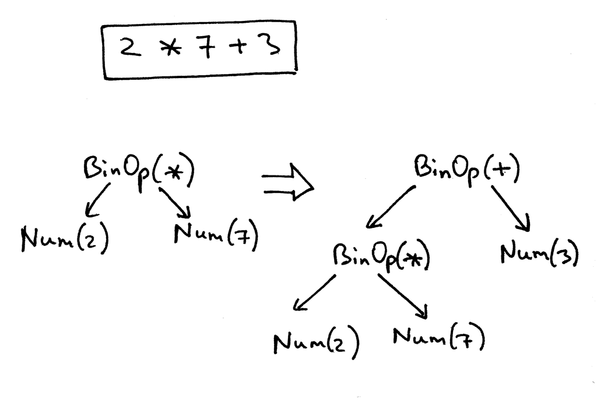

Rust from ruby
TDC - POA
slides: github.com/cristianoliveira/rust-for-rubists_tdc-poa
Sobre a linguagem
Rust é uma linguagem extremamente rápida de tipagem estática que garante operações memory safety e concorrência sem condições de corrida.
Legal mas:
- Eu já programo em ruby
- Ruby paga minhas contas
- Eu gosto de ruby
E mesmo assim devo aprender Rust?

Motivo 1
"A language that doesn’t affect the way you think about programming is not worth knowing."
- Alan Perlis
Motivo 2
Rust é extremamente rápido.
~$ time ./helloworld [ruby-2.2.1]
Hello, world
./helloworld 0.00s user 0.00s system 66% cpu 0.003 total
Mesmo código em Ruby
~$ time ruby examples/ruby/helloworld.rb
Hello, world
ruby examples/ruby/helloworld.rb 0.04s user 0.01s system 94% cpu 0.045 total

"Não uso Ruby por ser rápido e se precisar de performance posso descer para C"

Então qual é o ponto?
Rails App
"Gostamos do Rails pois ele facilita nossa vida! Mas como lidar com uma aplicação monolitica?"
Rust as a service :P
Motivo 2
Muita gente massa do Ruby esta participando do Rust
Motivo 3
Toda a segurança e conveniência do Ruby em código nativo - wycat

Motivo 4
Você pode aprender muito como Ruby funciona através do Rust
Tentarei ensinar algo novo hoje! :)
Coisas que aprendi sobre Ruby aprendendo Rust
Me desculpem!
Temos que falar sobre Stack x Heap memory
Stack memory
- Gerenciada e otimizada pela CPU
- Escopo local
- Extremamente Rápida
- Limitada
Heap memory
- Gerenciado por alguem
- Escopo global
- Lenta
Ruby
Basicamente *tudo e alocado na Heap
Rust
Basicamente tudo na Stack ou explicitamente alocado.
A gente sabe que Ruby é lento, mas gente ama ele mesmo assim.
<3
Porque?
Linguagem Interpretada

Tokenizer


Parse
Mão a massa
online:
https://play.rust-lang.org/
instalar:
https://www.rust-lang.org/en-US/downloads.html
Semelhanças
- Convenção para nome de variáveis
let snake_case - Blocks com '{}'
while true { do_stuff() } - Parece dinamicamente tipada, mas é inferência.
let num = 0; let string = "a"; let s:str = "a"; - Não precisa de 'return' no fim do bloco.
Diferenças
- O statement deve terminar com ';' menos o último.
- 'fn' no lugar de 'def'
- Imutabilidade by default ou mutabilidade explicita!
- Não tente enganar o compilador! Ele vai reclamar.
fn f(x){
let a = 0; // Imutable
let mut b = 1; // Mutable
b = a + 1; // Permitido
a = b + 1; // Erro!
a + b + x // retorna o ultimo statement
}Bom e velho: Hello World
rust
fn main() {
println!("Hello, world!");
}
$ rustc examples/rust/helloworld.rs && ./helloworld
ruby
puts "Hello, world!"
$ ruby examples/rust/helloworld.rb
Cargo:
the package manager and build tool
'Hello world' com cargo:
~$ cargo new helloword --bin
~$ cd helloword/
helloword$ cargo run